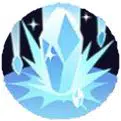

| Attaque | Icône | Description |
|---|---|---|
| Attaque de base |  |
La troisième Attaque de base est renforcée. Elle inflige des dégâts aux Pokémon adverses et les gèle pendant une courte durée. De plus, quand le lanceur gèle un Pokémon adverse avec une de ses capacités, ses attaques de base lui infligent plus de dégâts pendant une courte durée. |
| Talent | Icône | Description |
|---|---|---|
| Isograisse | Quand le lanceur inflige des dégâts, sa Défense et sa Défense Spéciale augmentent pendant une courte durée (jusqu’à 3 fois). Quand il utilise Éclats Glace, Chute Glace ou Crocs Givre, sa prochaine attaque de base est renforcée. De plus, quand ces capacités créent une zone de gel sur un objectif allié, les Pokémon adverses marquent moins rapidement sur cet objectif. |
| Attaque spéciale 1 | ||
|---|---|---|
| Attaque | Icône | Description |
| Eclats Glace | Envoie 3 éclats de glace à l’endroit indiqué. Il inflige des dégâts aux Pokémon adverses dans la zone d’effet et réduit leur vitesse de déplacement. Si un Pokémon adverse est touché par les 3 éclats, il est gelé. |
|
| Attaque | Icône | Description |
|---|---|---|
| Niveau 6: Chute Glace Amélioration au niveau 12 |
 | Fait tomber des stalactites à l’endroit indiqué, infligeant des dégâts aux Pokémon adverses et réduisant leur vitesse de déplacement. La dernière stalactite éclate après un délai ou quand le lanceur la touche avec une capacité ou une attaque renforcée. Les Pokémon autour de la stalactite subissent des dégâts supplémentaires. |
| Attaque | Icône | Description |
|---|---|---|
| Niveau 6: Crocs Givre Amélioration au niveau 12 |
Utilise ses défenses glacées et projette en l’air le Pokémon adverse le plus proche, lui infligeant des dégâts et le gelant. Il l’écrase ensuite au sol dans la direction sélectionnée. Les Pokémon autour de la zone d’impact subissent des dégâts et son gelés. |
| Attaque spéciale 2 | ||
|---|---|---|
| Attaque | Icône | Description |
| Charge | Charge dans la direction indiquée, infligeant des dégâts aux Pokémon adverses et les projetant dans les airs. | |
| Attaque | Icône | Description |
|---|---|---|
| Niveau 8: Cavalerie Lourde Amélioration au niveau 14 |
Charge dans la direction indiquée, infligeant des dégâts aux Pokémon adverses et les repoussant. Il piétine ensuite le sol, infligeant des dégâts en zone et étourdissant les Pokémon touchés. Les Pokémon gelés subissent davantage de dégâts du piétinement. |
| Attaque | Icône | Description |
|---|---|---|
| Niveau 8: Séisme Amélioration au niveau 14 |
Saut dans les airs dans la direction indiquée et retombe brutalement au sol, infligeant des dégâts et attirant les Pokémon touchés. |
| Capacité Unite | ||
|---|---|---|
| Attaque | Icône | Description |
| Piétinement Massis Débloquage au niveau 10 |
Devient insensible aux contrôle de foule et bondit à l’endroit indiqué. Le lanceur s’écrase au sol 4 fois, infligeant des dégâts et ralentissant les ennemis à chaque impact. Le dernier tremblement projette les ennemis dans les airs. |
|